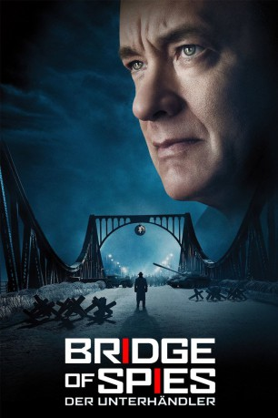

Auszeichnungen: 1 Oscars gewonnen für 5 Oscars nominiert 1 BAFTA-Awards gewonnen
 gesehen am 28.01.2016
gesehen am 28.01.2016Alternativ: Bridge of Spies
Auszeichnungen: 1 Oscars gewonnen für 5 Oscars nominiert 1 BAFTA-Awards gewonnen gesehen am 28.01.2016
 
 IMDB-Wertung: 7.6 / 10
IMDB-Wertung: 7.6 / 10  Metascore:
Metascore: 
1957, als der Kalte Krieg auf einem Höhepunkt ist, gelingt den USA die Verhaftung des Sowjetagenten Rudolf Abel. Er wird vernommen, verweigert aber die Zusammenarbeit. Als Pflichtverteidiger bekommt er jemanden zur Seite gestellt, dessen Fähigkeiten außer Frage stehen, der jedoch als Versicherungsanwalt wenig Expertise für seinen neuen Auftrag mitbringt: James Donovan. Der Jurist ist skeptisch, zumal die Verteidigung eines feindlichen Agenten von vielen als Landesverrat angesehen wird.Donovans persönliche Lage spitzt sich zu, als ihn der CIA-Beamte Hoffman , beindruckt von Donovans Auftritten im Gerichtssaal, mit einer neuen Mission betraut. Das U-2-Spionage-Flugzeug des US-Piloten Francis Gary Powers wurde über der Sowjetunion abgeschossen. Donovan soll nach Ost-Berlin, um mit den Sowjets die Freilassung zu verhandeln – und einen Gefangenenaustausch zu initiieren…
Jahr: 2015
Dauer: 141 Minuten
FSK: 12
Land: USA Studio: Walt Disney Studios Motion PicturesTonspuren: DTS-HD - , DTS-HD - ,
Untertitel: , , , , , Englisch, , , , Japanisch, , , ,
Auflösung: 1080p (1920x800) Größe: 22937 MB
Genre: Thriller, Drama, Biographie
Regisseur:  Steven Spielberg
Steven Spielberg
Drehbuch: Matt Charman, Ethan Coen, Joel Coen
Soundtrack: Thomas Newman
Darsteller:
 Mark Rylance als Rudolf Abel
Mark Rylance als Rudolf Abel Domenick Lombardozzi als Agent Blasco
Domenick Lombardozzi als Agent Blasco Victor Verhaeghe als Agent Gamber
Victor Verhaeghe als Agent Gamber Brian Hutchison als FBI Agent
Brian Hutchison als FBI Agent Tom Hanks als James B. Donovan
Tom Hanks als James B. Donovan Joshua Harto als Bates
Joshua Harto als Bates Alan Alda als Thomas Watters Jr.
Alan Alda als Thomas Watters Jr. John Rue als Lynn Goodnough
John Rue als Lynn Goodnough Billy Magnussen als Doug Forrester
Billy Magnussen als Doug Forrester Amy Ryan als Mary Donovan
Amy Ryan als Mary Donovan Eve Hewson als Carol Donovan
Eve Hewson als Carol Donovan Austin Stowell als Francis Gary Powers
Austin Stowell als Francis Gary Powers Jesse Plemons als Joe Murphy
Jesse Plemons als Joe Murphy Michael Gaston als Agent Williams
Michael Gaston als Agent Williams Dakin Matthews als Judge Byers
Dakin Matthews als Judge Byers Stephen Kunken als William Tompkins
Stephen Kunken als William Tompkins Scott Shepherd als Hoffman
Scott Shepherd als Hoffman Ashlie Atkinson als Classroom Teacher
Ashlie Atkinson als Classroom Teacher Mike Houston als Man in Courtroom
Mike Houston als Man in Courtroom Joe Starr als Courthouse Reporter
Joe Starr als Courthouse Reporter Jonathan Walker als Courthouse Reporter
Jonathan Walker als Courthouse Reporter Edward James Hyland als Justice Warren
Edward James Hyland als Justice Warren Peter McRobbie als Allen Dulles
Peter McRobbie als Allen Dulles Will Rogers als Frederic Pryor
Will Rogers als Frederic PryorDatei: X:\2015(A-F)\Bridge of Spies Der Unterhändler (2015, FSK12, 1920x800).mkv seit 28.01.2016
Festplatte: HD 2015(A-Z)
 Es gibt insgesamt 143 Filme in der Gruppe '2015(A-F)'
Es gibt insgesamt 143 Filme in der Gruppe '2015(A-F)'